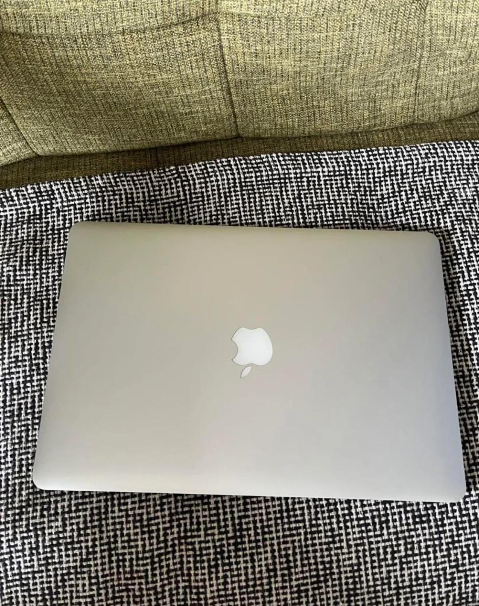

苹果 MacBook Pro Retina（2012）

Retina 屏幕的开山之作，专业创作笔记本的分水岭。
客观评测
2012 款 MacBook Pro 配备 15.4 英寸 2880×1800 Retina 屏，220ppi 的细腻度在当时无出其右。i7-3615QM 四核八线程、8GB 内存与 GT 650M 独显的组合，剪辑 1080p 视频、修图游刃有余。实测办公续航约 7 小时，2.02kg 机身塞进双雷电、HDMI 与 USB 3.0。代价是内存焊死、硬盘为专有接口，升级空间几乎为零。
主观点评
第一次点亮那块屏幕时，文字锐利得像印在玻璃上，从此就回不去了。它把'专业笔记本'的标准从性能扩展到显示效果，也顺手淘汰了光驱和网线口。铝合金一体成型机身、玻璃触控板、克制的风扇策略，每个细节都透着成熟。当然，它也开启了不可升级、维修昂贵的时代，让人又爱又恨。对很多人来说，这是一台能用五六年的工作主力，Retina 二字代表的是一种再也回不去的视觉体验。
优点与不足
- 2880×1800 Retina 屏在 2012 年堪称革命
- 四核 i7 与独显组合胜任视频剪辑与修图
- 接口丰富且机身仅 2.02kg，续航扎实
- 内存与硬盘均不可自行升级
- 专有 SSD 更换成本高
- 高负载下风扇噪音明显
参数规格
| 处理器 | 英特尔 Core i7-3615QM（2.3GHz，四核八线程） |
|---|---|
| 显卡 | NVIDIA GeForce GT 650M 1GB GDDR5 + HD 4000 |
| 内存 | 8GB DDR3L 1600MHz（板载） |
| 存储 | 256GB SSD（专有接口） |
| 屏幕 | 15.4 英寸 IPS Retina，2880×1800，220ppi |
| 电池 | 95Wh 锂聚合物，约 7 小时无线上网 |
| 接口 | 2×Thunderbolt、2×USB 3.0、HDMI、SDXC 卡槽 |
| 厚度 | 18mm |
| 重量 | 2.02kg |
| 系统 | OS X 10.7 Lion（可免费升级至新版本） |